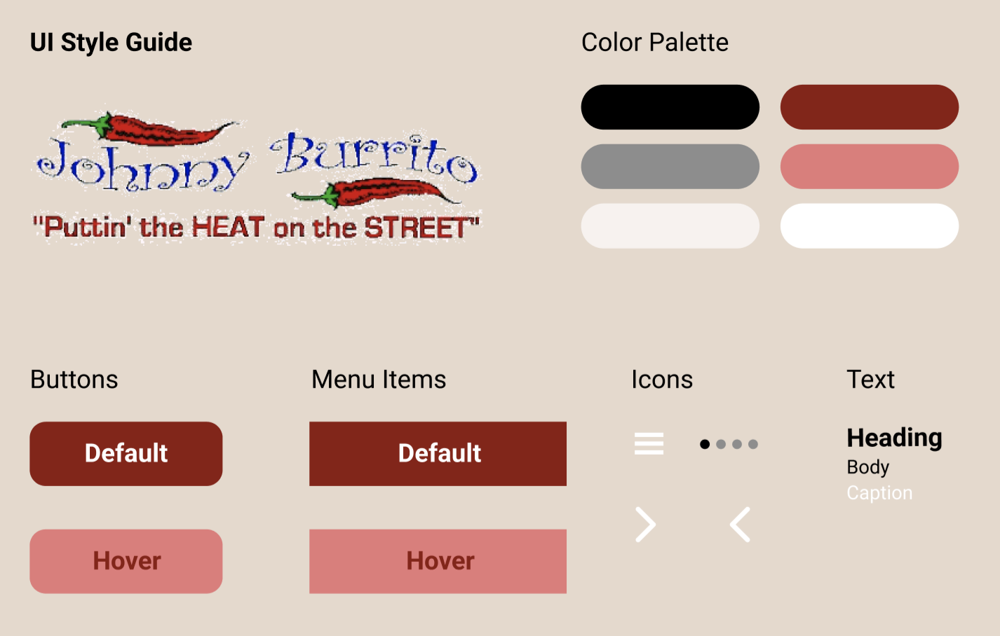

Redesigning the Johnny Burrito website
This project is a redesign of Johnny Burrito's website. Click the image below or go to http://www.johnnyburrito.com/ to check it out.

I chose to redesign this website because I frequented this family owned restaurant in Charlotte over the summer and was disappointed that their website was not as good as their service.
Problems
The website has several issues which are presented in the below. The numbers in the list correspond to the numbers in the image, labelling where the issue is on the original website.
For a closer look, hover over the image and scroll through!

- "Fun Stuff" opens up mini-menu that is difficult to use since it often closes when you hover towards it
- Random Text
- No coherent order to tabs (Why isn't the Home tab first?)
- Brightly colored text is distracting and low contrast
- Layout and sections aren't clear
- Information about holidays is in tiny font and hard to notice
- Images and text aren't aligned
- Not clear that the pictures are supposed to be links
- Missing or uninformative alt text
- Random links make the page extend unnecessarily
- Unnecessary clutter advertising the website makers
- Redundant links on bottom
WebAIM WAVE was also used to detect possible accessibility problems. This web accessibility tool had similar findings. Its main complaints were the lack of alt text and low contrast.
Some other findings were
- Missing first level heading
- No page regions
- Three redundant links
- One empty link
- Language missing or invalid
I agree with these findings for the most part. I would add that the text color is not only low contrast, but also distracting and visually repellent.
Wireframes
Using Balsamiq, I created 3 wireframes of the redesigned website. Each is for a different screen size (mobile, tablet, and desktop). Scroll through each wireframe to show how it fixes the problems mentioned earlier.
Desktop Wireframe
Mobile Wireframe
Tablet Wireframe
Style Guide
This style guide was created using Figma. The logo and red color were both taken from the original website. I changed the background color to a beige, off-white color and made a new hover style. The icons were all created with figma using the shapes tools. The font used here is Roboto because Helvetica was not included in the Figma fonts, but for the redesign I used Helvetica.
Prototypes
The following hi-fi prototypes were all created using Figma.